Sunday, September 17, 2017
Rome -> London: crumpets and good company
People really will do what it takes to make their flight. My bus ticket said to get to the station 15-20 min early to guarantee seating, which was very misleading. Because once the bus arrived, everyone scrambled over to the door and started squeezing and shoving to get in—it was a madhouse. I was at the back of the crowd from the start and so didn’t make it. Despite getting up at 3:30am to make the 4:30 bus to the airport, I had to take the 4:50, which was pretty much empty, but bus driver went fast and made it 15 min early. Thankfully I already printed my boarding pass and made my flight. Whew!
I got thru security and customs smoothly and walked out of the gate— but not into a plane. I found myself back outside where a bus was waiting to take us to the plane. That was a new experience for me. What was also new was being charged for snacks and drinks on the plane: I asked for tea and crisps but then saw that meant chips so changed to peanuts, and then was charged 5 euros! I returned the peanuts.
I finished The Art of Possibility, an inspiring book on how to start living in a world of possibility. The chapter I read was about focusing on the WE story rather than I/You.
____________________
London was cloudy and chilly as expected, but I was ecstatic to be here nevertheless. I went to a café in the airport and saw crumpets on the menu—how curious! My first London breakfast consisted of warm crumpets with butter.
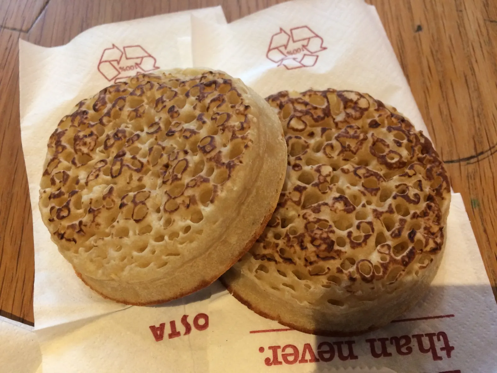
I got on the train to London Liverpool Street (not knowing you have to press a button to open the train doors) and confirmed with a nice-looking girl to make sure I was on the right train. We started talking; I found out that she was a super cool student from Glendale; she just got her MA in Liverpool in drama. We talked about America vs. London, she told me how much I would love London and how it’s so easy to get around. She warned me lots of people would ask how America is doing right now. We passed by fields with cute oxen grazing in them and she said I would see a lot of livestock here. She said the food is good and underrated in America. We talked about theatre—she recommended I go to the Globe Theatre to see Shakespeare and to visit Liverpool. She said she would love to live in England, as the actors here have a better reputation than in LA; she told me about how acting is a hard life because there’s not much funding and schools are cutting programs. She also said that she didn’t like La La Land because it’s so true and represents her lifestyle, which made me laugh. Once we arrived, she helped me buy an Oyster card, and we went on our ways. What refreshing and delightful conversation to start my London experience.
London was like Boston and New York combined—a large bustling city like New York but with wide streets and not too crowded like Boston. The Tube is really nice, with cushioned seats and all. I can roll luggage right onto the subway without having to lift it, and the stops are easy to find. I really like the London feel. One of the first things I noticed was the cars with the driving wheel on the right and on the left side of the road, and the warning signs painted onto the streets for the non-British peoples:
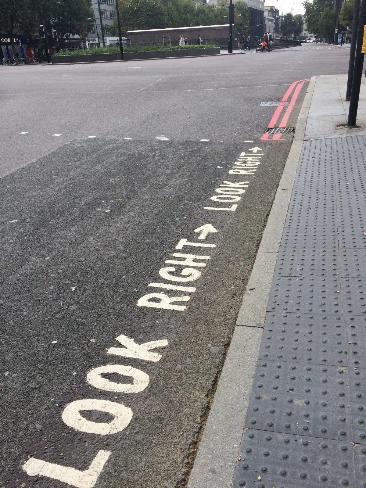
I was staying with Mina so met up with her and Remi at UCL for lunch, which consisted of lots of talking and laughing as we caught up on our summers and marveled at how cool and how strange it was to be here.
After eating pizza and pasta for two weeks, it was nice to have a burger for a change. We sat in the dorms and talked, I went to their res hall meeting, the wardens kindly gave me a free blanket and cover (I think they thought I was a student). We walked through the exciting London streets to Primark, a large store with home goods and dorm essentials, filled with students. Had a nice dinner at Punjab, an Indian restaurant, before realizing how tired I was. It’s been a long day.
Monday, September 18, 2017
London in the rain~
After a very cold night, it was nice to wear double layers and walk out to brave the crisp cold London air. Almond croissant with fennel & mint tea for breakfast at the Pret A Manger café, which seems to be the Starbucks of London.
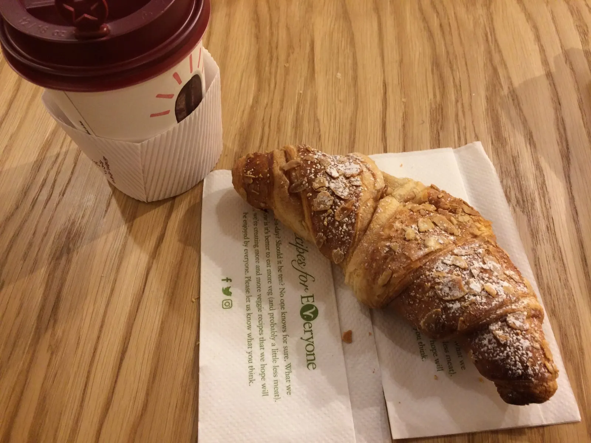
After breakfast Mina and I headed over to the British Museum, where Remi soon joined us. It was a very large museum and free of charge, which was a pleasant surprise. I was so fascinated looking at all the art and learning about Egyptian, Greek, African, Japanese, American history and culture. The highlight of the museum was the original Rosetta Stone, the only surviving fragment of a larger stone slab recording a decree on March 27, 196 BC. The decree is written three times—in hieroglyphs (the traditional script of Egyptian monuments), Demotic (everyday script of literate Egyptians), and Greek (language used by the government); thus, it was used to decipher the ancient Egyptian hieroglyphic script.
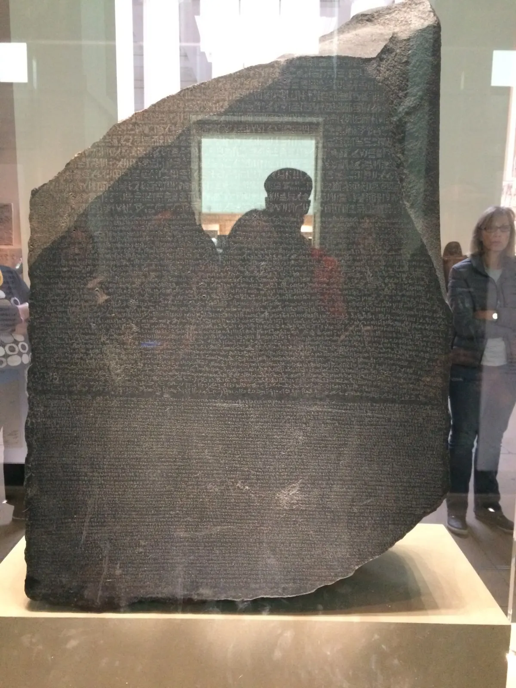
Looking at the Egyptian sculptures that decorated the palace of Tiglath-Pileser III, one of the most successful Assyrian kings, hunt scenes in Assyrian art (lion hunting was the sport of kings), and learning about the Parthenon temple (to Athena, a thank offering for the Greek victory over the Persians) and Acropolis (sacred heart of Athens), I was transported back to 6th grade history and wanted to be studying ancient Greek and Roman and Egyptian culture again.

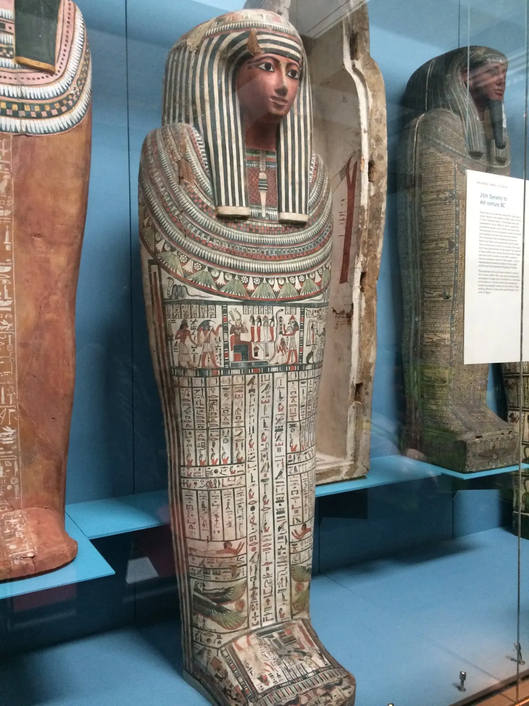

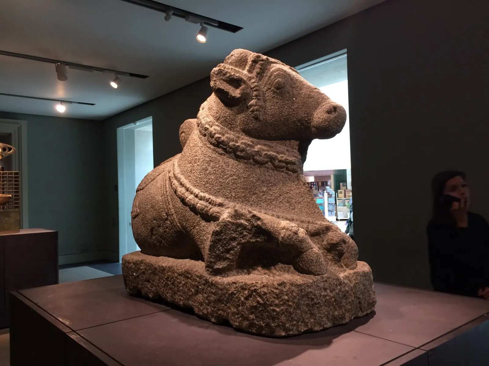
The living and dying gallery was pretty interesting; it depicted how different groups have dealt with harsh conditions and the tough realities of life and death, how they have relied on relationships to maintain wellbeing. There were exhibitions on how the North American Arctic people survived on clothing made from caribou skins and fat from seals, how New Zealand people navigated the seas (which brought me back to my wonderful time in Hawaii). There was an African gallery featuring pottery, which symbolized important parts of life (broken in death, created in marriage). There were rooms full of Egyptian coffins and royal tombs, displays of shabti sculptures (magical figures to carry out tasks on behalf of the deceased in the afterlife), prints and drawings (the first prints on paper were made in Europe in 1400). The Japanese gallery was my favorite. It led us through the history of Japan accompanied by artifacts, from the ancient and medieval period to the Edo period—when the Samurai rulers established a new military government in modern Tokyo—to modern Japan, when a new modernizing regime ruled in the name of the Meiji emperor and Japan began to assert international influence. One of the many facts I found interesting was that for cosmetics, Japanese women would use finely powdered rice flour to whiten the face and charcoal black to paint false eyebrows. Talk about natural makeup!
My throat was feeling weird, like that feeling when you’re about to get sick. I wanted noodle soup but the nearest ramen place was a 30-minute wait, so I just had a bowl of tofu curry for 6 pounds at Wasabi, a to-go restaurant. I stayed in the restaurant for a couple hours until Mina, Christy, and Remi were done with their campus tour, then joined them at lunch. Random London tip: always bring your umbrella, even if rain isn’t in the forecast. It started raining and I was caught with no umbrella, but luckily it didn’t continue for long.
At 5 Mina and Remi had a royal palace tour, and on the way to their meeting place we passed Trafalgar (tra-FAL-gher) Square, a beautiful square with a national gallery of art, two aqua blue fountains, a statue of King George IV, and a man playing acoustic music that made me feel at peace and leisure.
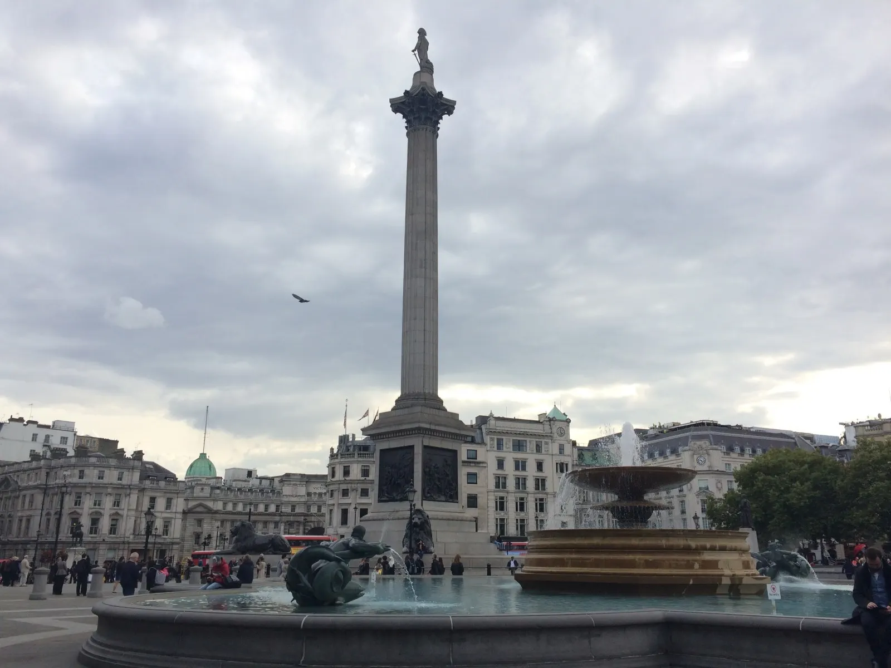
I was feeling fruit so bought a pineapple kiwi banana orange smoothie for 2 pounds. The man selling the smoothies was really kind—he had a strong British accent as he said have a lovely evening.
Christy and I started trailing the tour group but felt like we were being creepy, so went our own way. We watched a swarm of pigeons circle like rats around two men sitting on the grass and eating sandwiches—the pigeons here are really plump, and no wonder, the men were periodically tossing out pieces of bread. The pigeons here fly really close to your head as if taunting you—they aren’t at all afraid of people. We walked towards the Westminster Bridge, where I at last saw the Big Ben and London Eye and the Palace of Westminster (Parliament). What I had only before imagined and seen in pictures was all at once right there before my eyes! I saw how intricate the Elizabeth Tower and Bell Tower and cathedral were, and how beautiful.

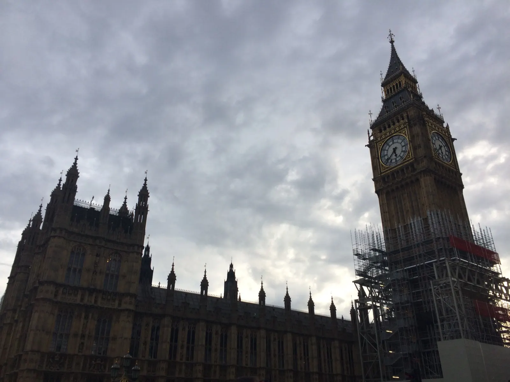

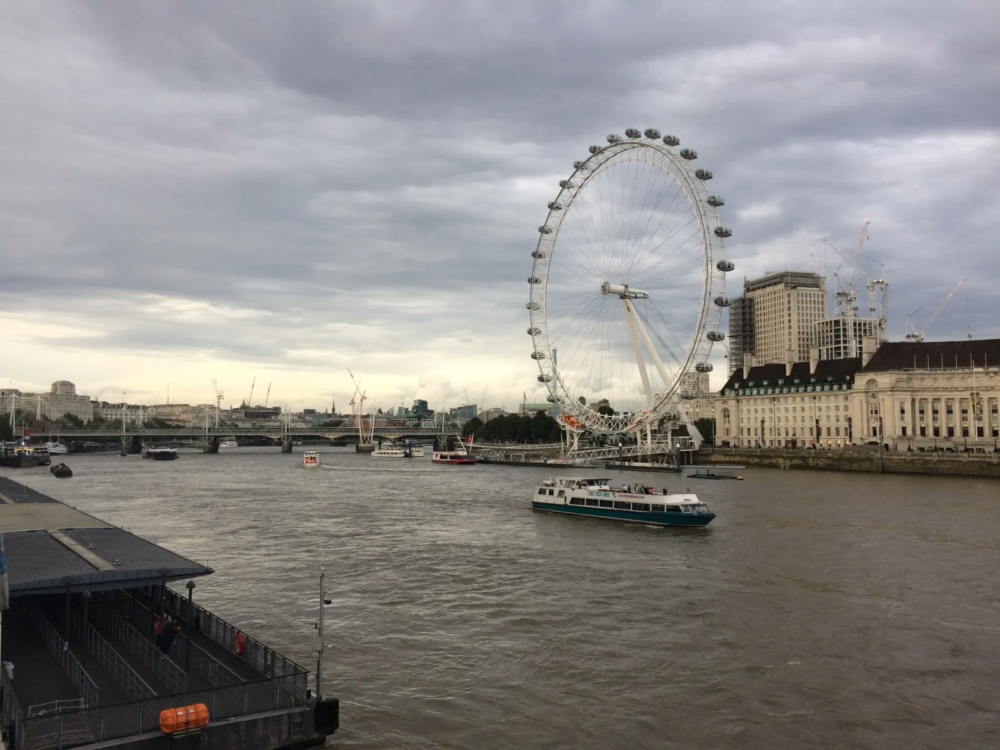
We saw the Westminster Abbey Church, where Kate and William had their royal wedding, and admired their wedding photos in souvenir books in the Westminster Abbey Shop.
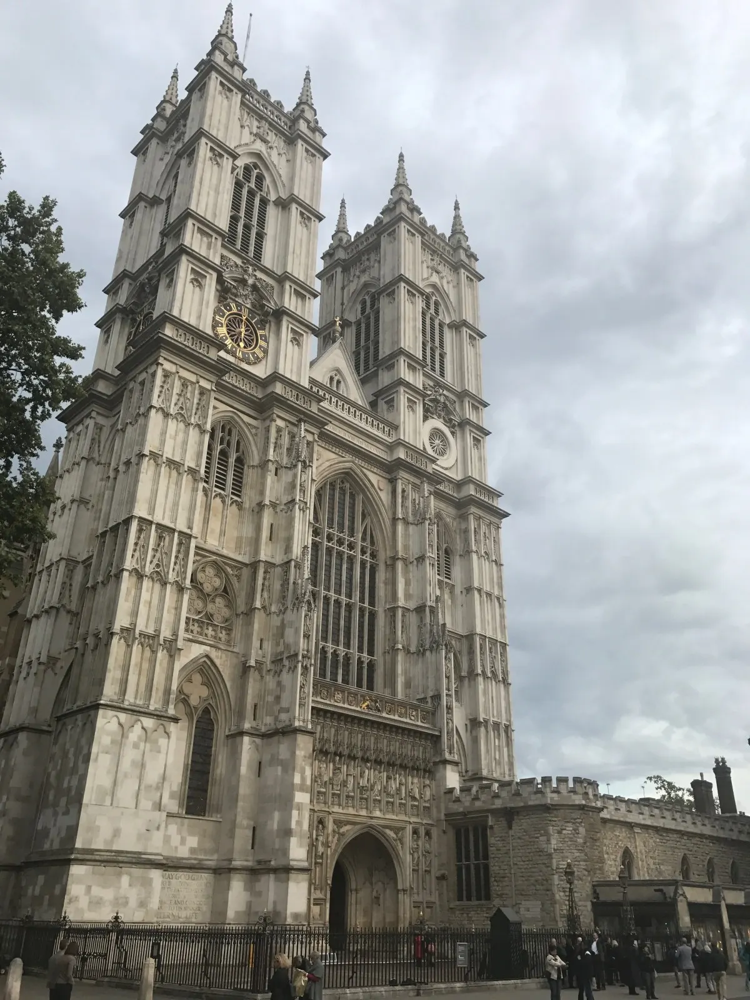
Took the bus back to Christy’s room; you can use the Oyster Card on buses in addition to the Tube (they don’t say “subway” here). While Christy, Mina, and Remi went to game night, I had ramen (all I wanted was noodle soup) and then had quite the adventure trying to find the laundry room. There was only one laundry room in the entire quad of residential buildings, and I got lost in the maze of blue fire doors and stairways and finally found it with the help of a couple people I ran into. Then I found that the laundry machines only take £1 coins; luckily there was a student who was just about to leave, and she not only gave me a £1 coin but also showed me a much shorter way to get there by going outside rather than navigating the indoor passageways.
Tuesday, September 19, 2017
The Royal Buckingham Palace
I had the most filling breakfast I’ve had in a while—sunny side up egg, bacon, oatmeal, grilled tomato and mushroom, an orange, and Mina’s chocolate croissant. Walked down the streets lined with brown and red brick buildings on the way to the Brunswick, an outdoor shopping center, to meet Mina, Remi, and Christy for lunch.
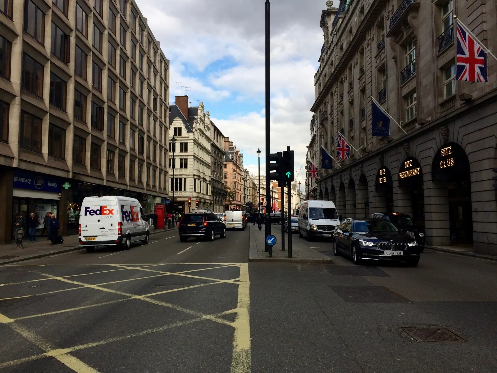
After lunch I went off separately to see the Buckingham Palace. I walked through the Green Park, a spacious, beautiful expanse of green with lawn chairs. As I walked under huge shady trees, I smelled sweet greens and ferns.
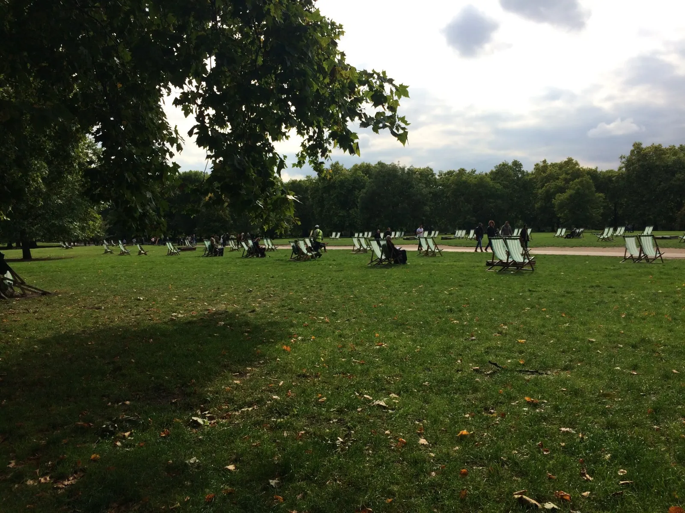
I stopped by the Canada memorial, unveiled in 1994 to pay tribute to the nearly 1 million Canadian and Newfoundland people who came to the U.K. to serve during the first and second world wars and honors the more than 100,000 that sacrificed their lives for peace and freedom.
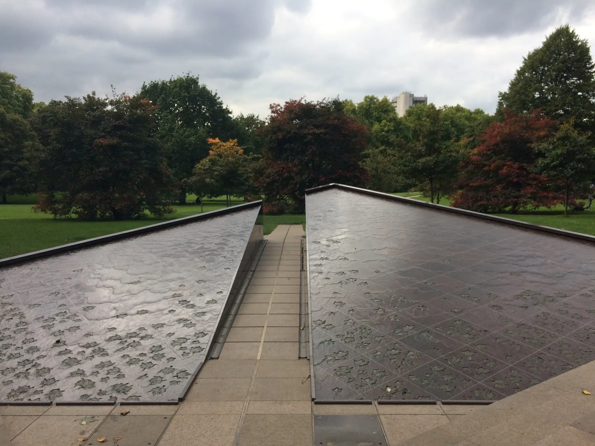
The Buckingham Palace was the official residence of Britain’s sovereigns since 1837 and an administrative headquarters with 775 rooms, 78 bathrooms, and 19 State rooms. It was the working heart of the palace. Unfortunately we weren’t allowed to take photos inside, but an audio guided us through every room we entered; it was the most opulent palace I had ever been in. Some things I got to see:
- Archangel: a stagecoach gift from Australia.
- Red velvet carpets of the grand halls and stairways. The staircase was so majestic with two sets of symmetrical stairs, and the structure of the building made you automatically look upward, toward the bright light coming from the ceiling.
- State rooms, which contained a selection of gifts presented to the queen.
- Delicate golden embellishments and ornate gold—the walls were lined with pure gold
- Throne room: pics of royal wedding couples
- Picture gallery: paintings from the royal collection, collected by kings and queens over 500 years
- Ball supper room: built for queen Victoria, contains gifts presented to the queen from across the UK
- Gifts: included a bust of the queen, baskets, plates, paintings, engraved glass bowls, embellished felt collage, reproduction of a stained glass window, horses, jersey cows, a giant armadillo from Brazil
- Ballroom: Queen Victoria loved to dance, holding state concerts and balls where world class artists like Strauss and Mendelssohn performed. Gifts from Asia and the Middle East
- Setting up for state banquets—the table holds up to 170 guests with silverware from royal collection; preparations can take several weeks
- Garden parties: 8000 a time, time for queen to say thank you
- Blue drawing room: for entertainment
- Chandeliers made in 19th c, with each glass drop carved by hand
- Music room: christening
- White drawing room: to entertain guests, 635 events a year. A mirror swung open to reveal a door from which the royal family would enter from their private rooms
- Gilding: putting gold on things, around doors and paintings
- Marble hall: sculptures
I came out of the palace and walked through the park, a large green expanse with large trees, Canadian geese, and white seagulls. The garden was beautiful, with a lush lake/pond that houses bees, which produce enough honey to supply the palace and are looked after by a Royal Beekeeper, as well as herons and bats. The opulence of the palace and the peace and beauty of the garden just filled me with awe.
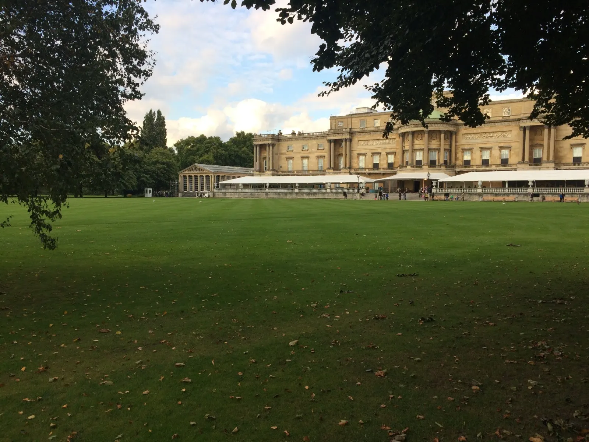
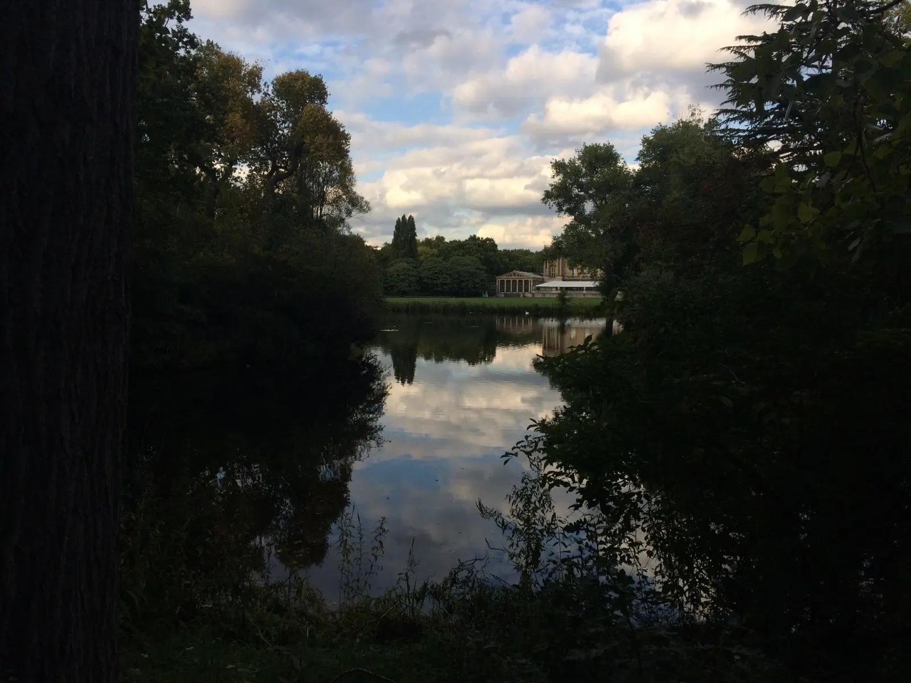
On the way back I saw the Wellington Arch, the original entrance to the Buckingham Palace built to commemorate the British victory in the Napoleonic Wars, and a WWII bomber memorial.
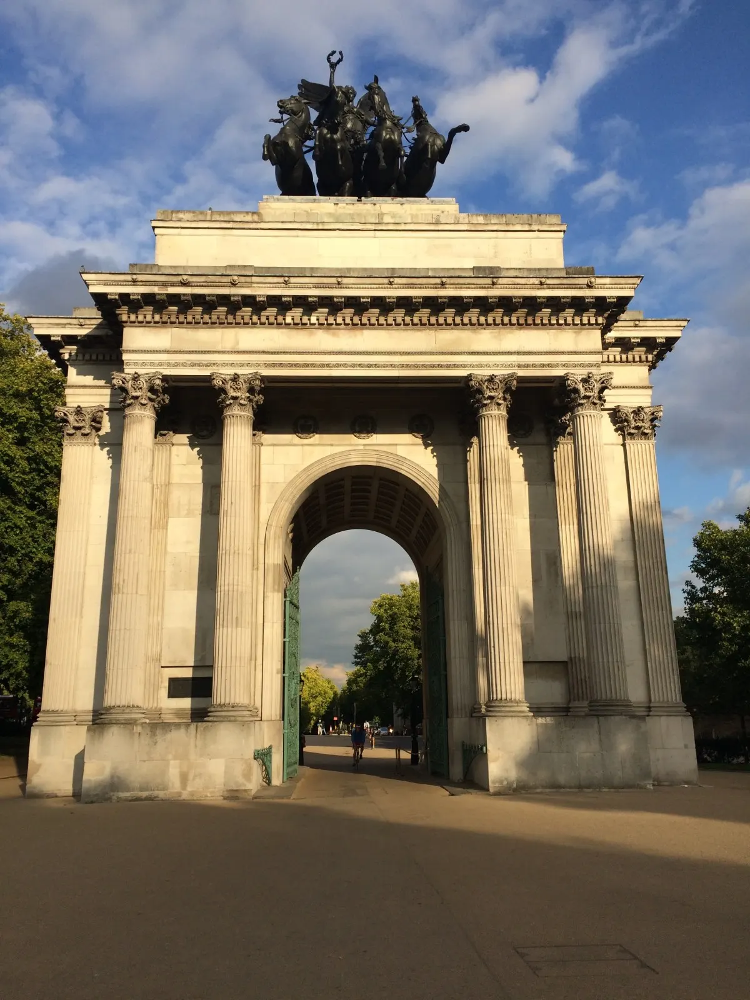
Almost took the subway back but decided not to because I figured the streets of London made for better scenery. I walked down a street with all types of Asian restaurants and a T.K.Maxx (sister of T.J.Maxx?). Had dinner with our Wellesley group and met the first true Londoner; enjoyed a fish burger with cucumbers and aioli.
A new term I learned: self-catered—British definition: provided with lodging and cooking facilities but not meals.
Wednesday, September 20, 2017
Camden Market
Last night was the warmest and most restful night yet, and I woke up rejuvenated. Enjoyed a chocolate croissant and apple for breakfast, sent some emails. Then Mina, Remi, and I walked to the Camden Market. On the way I grabbed a cup of chicken and bean soup from the Pret café.
The Camden Market was an outdoor street market full of little shops and booths selling everything from Italian pizza and French crepes to shiny rings and handmade 100% genuine leather purses.
One person was selling old cameras; I toyed around with it and then asked him how to use it. “You’ve never used a camera?” he sounded incredulous. There was Thai, Chinese, and Indian food, taste of Italy, churros churned out and deep fried in front of you, Nutella pancakes with more strawberries on them than were in the smoothie I had (though the smoothie actually came in a good size cup, especially given that portions here are much smaller than in the States). I paid 3 pounds for the smoothie, and when I saw she only put 3 strawberries into the blender, asked for more strawberries. I got a spoonful more of what looked like raspberries. We shared a basket of fish and chips. The cod was soft and warm underneath the crunchy breaded outside, the fries thick and crispy. We wanted more cod and less chips.
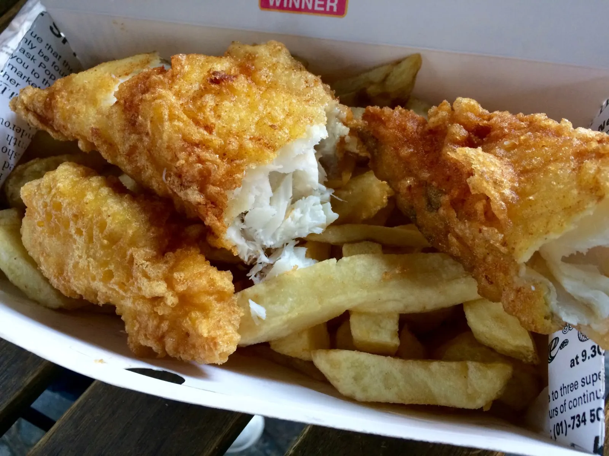
Took the bus back and chilled in Mina’s dorm, had dinner in Remi’s dorm cafeteria (pork with sweet chili sauce and a French baguette, not a bad meal) and talked about our social awkwardness and all the terrible disasters that have happened (there was an earthquake in Mexico City last night that killed at least 200, plus Hurricane Maria just knocked all of Puerto Rico out of power). We talked about more positive things too that I don’t remember anymore.
Walked back through the dark streets. After a wonderful 3 ½ days in London, I am on to my next adventure. I really enjoyed the charm of London and am so thankful I had a place to stay (and a blanket to sleep with), and friends at UCL to eat and hang out with and talk about how much we miss the convenience of Wellesley. Sad to leave London tomorrow, but will definitely be back soon.